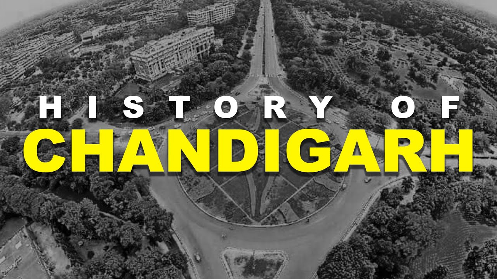
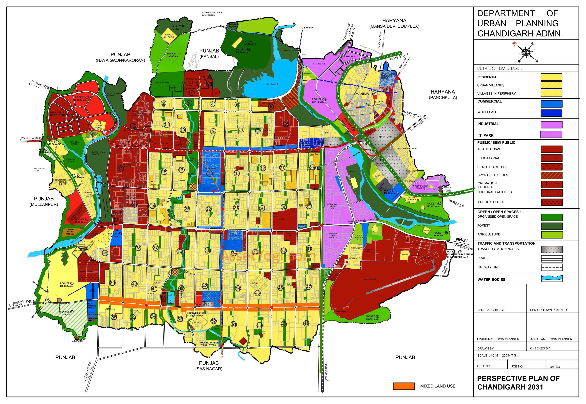

Formation After Independence
After India gained independence in 1947, the state of Punjab lost its historic capital, Lahore, which became part of Pakistan during the Partition. To fulfill the need for a new capital, the Government of India decided to build a completely new city. Chandigarh was selected due to its strategic location near the Shivalik Hills and availability of land. Construction began in the early 1950s, and the city was officially inaugurated in 1953. Later, in 1966, Chandigarh was declared a Union Territory and made the shared capital of Punjab and Haryana.

Role of Le Corbusier
Le Corbusier played a crucial role in shaping Chandigarh as a modern planned city. Appointed as the chief architect in the early 1950s, he designed the city using a systematic sector-based layout. His vision emphasized wide roads, green spaces, and a clear separation of residential, commercial, and administrative areas. He also designed iconic structures such as the Capitol Complex, which includes the High Court, Secretariat, and Legislative Assembly.

Development Phases of Chandigarh
Chandigarh’s development took place in well-planned phases. The first phase focused on core government buildings and initial residential sectors. The second phase expanded housing, educational institutions, and markets. The third phase concentrated on further urban growth, industrial development, and enhanced civic amenities. Throughout its development, Chandigarh preserved its structured layout, green belts, and high living standards.
